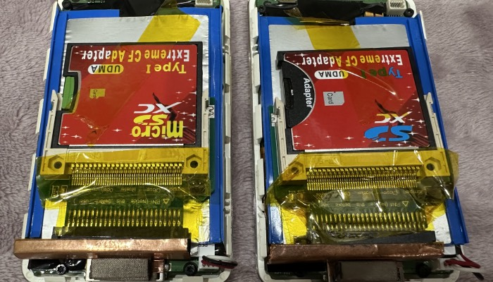
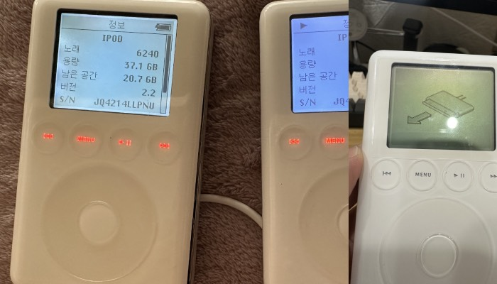

하 쓸데없이 바쁘고 몸도 않좋고 하다보니 업데이트 오랫만에 하는중.
그동안 안쓰는 물건 메루까리에 내다팔거나 (아직도 팔거많음) 고장난 아이팟들 사서 고치면서 놀았다.

코로나 때문에 3년간 집에도 못가다가, 기회가 있으면 가는 중인데, 간다고 해서 무얼하는건 아니고 집에만 가만히 있으면서 고양이들이랑 놀다가 온다.
그와중에 예전에 쓰던 아이팟들을 가지고 놀다가, 배터리수리할겸 겸사겸사 하다보니 최근 SD카드나 SSD하드 등으로 업그레이드가 가능하고,
특정모델들은 대용량 배터리등으로도 업그래이드가 가능하다는 걸 알았고 한동안 이것저것 실험하거나 하면서 놀다가 또 쌓여버린 아이팟들을 정리하고..
속에 들어가는 부품들이라 안보이긴하는데 이것저것 사서 테스트 해보고 하는거 아직은 더 놀아볼 여지가 있는 것같다.
그리고 아이팟 다시 꺼내서 놀면서 소니DAP나 블투덱등 하나정도만 남기고 죄다 정리해버렸다.
헤드폰도 소니 MV1하나 있으니 다른거 필요없는거같고.
줄 이어폰들도 몇개 남아있긴한데 정말 자주듣는놈만 남겨둘듯.
그와중에 장터에서 아이팟 독 스피커를 아아아ㅏ 주 저렴하게 구할 수 있어서 책상에 하나 침대 머리맡에 하나 두고 쓰고있는데
하 오래된 물건들 이렇게 쓰는거 너무 만족스럽다.
나도 나이가 들었나보다.